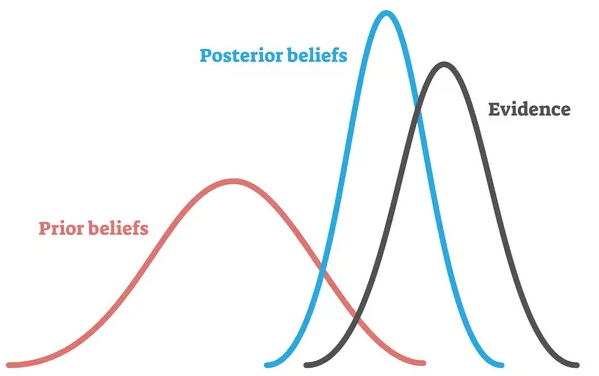
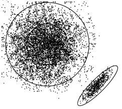
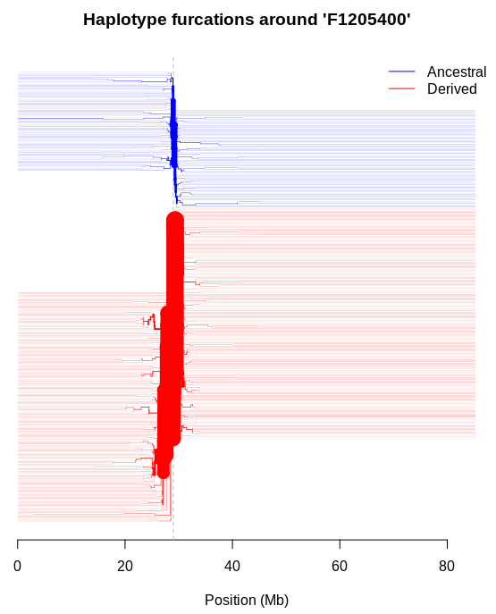

A Mamba installs

A.1 Mamba installation and environment
Mamba is a reimplementation of conda. It is a great tool for installing bioinformatic packages including R packages.
Mamba github: https://github.com/mamba-org/mamba
The best way to use Mamba is to install Miniforge. It has both Conda and Mamba commands.
Miniforge installation: https://github.com/conda-forge/miniforge
Mamba guide: https://mamba.readthedocs.io/en/latest/user_guide/mamba.html
To create the mamba environment popgenomics run the below commands in your bash. You will need to have installed mamba first.
B Jupyter-notebook

If you are running this on your own computer you can use RStudio for R.
However, you can also use Jupyter-notebook if you are using an HPC or prefer it.
If using bash you will need to create an environment with Jupyter-notebook.
Ensure you are in the (base) mamba environment.
To run Jupyter-notebook with your r_community environment you can run the following.
C Using loops to process multiple samples

In our main workflow we learnt how to run the QC and alignment steps using a single sample. You may be wondering how you would run these initial steps when you have many samples.
Ideally you don't want to have to run the same command multiple times - this is a recipe for typos and errors creeping into your code as well as being tedious and time consuming.
One approach to get around this is to run a loop which will cycle through each of your samples running the task you specify.
Put simply the syntax for a for loop is as follows:
The <variable name> is the name of the variable you will use in the do part of your loop.
It contains the item in your list the loop is currently using at that point.
I.e. in the simple loop example (below) we call this variable f but you could use any name as long as you use it consistently in your do section.
The <a list of items> is anything that returns a list of items, e.g. a list of files in our case.
C.1 Simple loop example
Below is an example of a loop, which can be adjusted for your samples and the software you are running. This simplified loop will clearly demonstrate what the first part of the code is doing.
Make sure you are in the directory ~/popgenomics/data/fastq/ and in a terminal window (not in Jupyter).
for f in *_1_small.fastq.gz; #the following will loop through all files ending _1_small.fastq.gz
do BASE=${f%_1_small.fastq.gz} #assign the file name '$f' to a variable called 'BASE' but remove the extension '_1_small.fastq.gz'
echo $f #print $f to screen
echo ${BASE}; #print ${BASE} to screen
doneBy using echo to print the following variables to the console we can see:
echo $f: prints the full filename.echo ${BASE}: prints just the start of the filename (minus the _1_small.fastq.gz extension as we specified in our code)
The loop then repeats the commands on the next file in the list (in this case we only have one file) and will keep going until it has run through all files ending with _1_small.fastq.gz in the given directory.
done specifies the end of the commands in the loop.
All commands between do and done in your loop will be executed. In this case we only have two files but this would work with any number of files. This is a useful bit of code as it means we can keep the filename but change the ending/extension of the file in our loops.
C.2 Trimmomatic loop example

Now we can write a loop to run trimmomatic starting with the code we used above as a base.
for f in *_1_small.fastq.gz; #the following will loop through all files ending _1_small.fastq.gz
do BASE=${f%_1_small.fastq.gz} #assign the file name '$f' to a variable called 'BASE' but remove the extension '_1_small.fastq.gz'
trimmomatic PE -threads 4 -phred33 \
#call trimmomatic and specify parameters
${BASE}_1_small.fastq.gz \
#specify input R1 extension
${BASE}_2_small.fastq.gz \
#specify input R2 extension
trimmed/${BASE}_1_out_paired.fastq \
#specify directory and filename for output of paired R1 read
trimmed/${BASE}_1_out_unpaired.fastq \
#specify directory and filename for output of unpaired R1 read
trimmed/${BASE}_2_out_paired.fastq \
#specify directory and filename for output of paired R2 read
trimmed/${BASE}_2_out_unpaired.fastq \
#specify directory and filename for output of unpaired R2 read
ILLUMINACLIP:TruSeq3-PE-2.fa:2:30:12 SLIDINGWINDOW:4:30 MINLEN:80; #further paramenters for trimmomatic
done #end of commandsYou can then edit this code to run other software in a loop. For a nice basic intro to Linux loops please click here.
D An overview of Bayesian statistics

As indicated in the presentations and used in some of the workshop analyses, many tools incorporate Bayesian approaches or statistics over other approaches. For example, population structure, admixture and ancestry can be examined using NGSadmix, which uses a maximum-likelihood approach, or STRUCTURE, which uses a Bayesian approach, and GEMMA for GWAS can implement a number of different models under a Bayesian framework. But, what does a Bayesian approach actually entail? This resource and this one are useful introductions - they are easy to follow and not too intimidating. (The latter includes some R exercises to demonstrate some principles).
The core philosophy of Bayesian statistics is built around the concept of conditional probability, with analyses aiming to maximise this conditional probability or to minimise the uncertainty in parameter space around this. This conditional probability is the probability or likelihood of observing a particular outcome given (i.e. conditional on) the data, a model and some prior information (a prior). (Paradoxically, it is actually the probability of observing the data, given the model, the priors and the outcome). The ability to include prior information is key, and an advantage of the approach is that it evaluates potential outcomes and all the parameters that underlie these simultaneously. It also lends itself to being iterative; the priors and their influence on the conditional probabilities can be explored, refined or updated through repeated analyses or by incorporating additional data.

In many cases, Bayesian approaches are favoured, not because of the ability to incorporate this prior, but because they are computationally efficient. If one can conceptualise a particular solution or result as lying at a given point in parameter space, a typical maximum likelihood approach may use an exhaustive or heuristic procedure to evaluate all points in that space, calculating a likelihood or probability given the model and data, and eventually compare these. In most cases, this is computationally restrictive and/or time-consuming. Bayesian approaches employ much more efficient sampling algorithms, such as MCMC (Markov chain Monte Carlo), as conducted when implementing the BSLMM model in GEMMA, to sample posterior probability distributions. Multiple chains will move around and selectively sample various points in parameter space, comparing the conditional probabilities among the chains themselves and to the prior sampled states, and retain those points (and the parameters underlying them) from the posterior probability distribution if there was an improvement in conditional probability. In doing so, eventually the chains and sampling will converge around the “true result”, as in the figure above, taken from this paper. While the chains might not necessarily hit on the exact result, there will be sufficient sampling around the “true result” that one can synthesise the information from multiple sampled “generations”, and obtain average values around the optimum. As such, it can provide useful information around uncertainty in our data, models and priors, allowing us to evaluate confidence intervals easily, and potentially change parameters, priors or add data. An unfortunate drawback of this approach is the possibility that the sampling gets trapped in local optima in parameter space (the points in the bottom right corner in the figure) rather than sampling near the “true result”. Thus, it is often advised to run multiple iterations of Bayesian analyses, modifying the starting parameters of the search, where the applications allow this.
There are additional aspects to be aware of. There is a longstanding debate as to whether Bayesian statistics have frequentist properties (and may be interpreted as one would interpret more traditional frequentist statistics, especially when evaluating significance) or whether they are entirely probabilistic. Often this conflict results from subtle differences in philosophical perspective; see this example. Additionally, when designing an experiment or choosing an analytical approach, Bayesian and frequentist approaches can yield different outcomes, with frequentist approaches often being more sensitive than Bayesian counterparts to how the hypotheses to be tested are framed or approached.
E Additional approaches for detecting selection and for GWAS
E.1 rehh

rehh is a R package which is used to explore SNP data and identify genomic regions that have been under recent positive selection (where advantageous variants are retained and increase in prevalence) in a single population or species, or to examine differential selection between two populations. A handy vignette (from which the above graph was taken) is available here. The approach is based on the concept of Extended Haplotype Homozygosity (EHH) (or a long-range haplotype test) proposed by Sabeti et al. 2002. Fundamentally, it considers the relationship between allele frequencies and linkage disequilibrium (LD). Under neutral evolution, mutations require time to establish in a population, by which time LD would have broken down around these mutations through recombination. Under recent positive selection, mutations increase in frequency rapidly, before LD has a chance to break down, and these extended haplotypes are then transmitted without recombination.
EHH is the probability that a pair of randomly-chosen chromosomes are identical by descent and homozygous for those SNPs which we have genotyped and mapped at a given distance from a core region of interest (presented as haplotypes of increasing length) on that chromosome. Values range from 0, where all these extended haplotypes are different, to 1, where all are homozygous. EHH is then considered relatively, where the EHH of the tested core haplotype is compared with the EHHs of other core haplotypes in the same region (but excluding other core haplotypes). Through this, the approach detects the breakdown of linkage disequilibrium as one moves further away from the core region. Core haplotypes in regions that have high EHH and are at high frequency in the population indicate mutations that have likely been established through non-neutral evolution.
The approach appears to be more powerful than many traditional metrics, but it can be complex to implement. To reconstruct the extended haplotypes, genotype data are phased, where each of the alleles of a given SNP genotype is assigned to a hypothetical haplotype. This is obviously straightforward when many loci are homozygous, but as one moves away from the SNP of interest (central in the core haplotype) and encounters heterozygous SNP genotypes the number of hypothetical haplotypes increases exponentially. There are a number of tools and approaches for phasing haplotypes, and a useful (albeit dated) review was published by Browning & Browning 2011. As input, rehh can accept haplotype data in various formats, including vcf-formatted data, and those produced by phasing programmes like SHAPEIT2 and fastPHASE.
E.2 GCTA
GCTA Genome-wide Complex Trait Analysis is a package that runs within a Linux/Unix environment, although there are installs and executables for Mac and Windows too. Yang et al. 2011 originally developed it to determine the proportions of phenotypic variance of a complex trait that can be explained by genome-wide SNP variation. It was since expanded to and focused on many different and powerful GWAS applications, and it now supports a wide range of analyses, including relatedness and inbreeding, heritability and LD estimation, as well as more traditional population genetic statistics.
The program takes binary PED files, generated by PLINK, as input files. As with many applications for GWAS, only biallelic SNPs are supported at the moment, and multiallelic SNPs are automatically ignored.